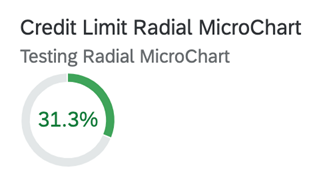

The chart consists of a colored radial bar with a percentage value inside.

For more information about this chart type, see Samples.
UI.Chart AnnotationThe UI.Chart Title property is used for the title. The UI.Chart Description property is used for the
subtitle.
XML Annotation
<Annotation Term="UI.Chart" Qualifier="SpecificationWidthRadialChart">
<Record Type="UI.ChartDefinitionType">
<PropertyValue Property="Title" String="Product Width Specification"/>
<PropertyValue Property="Description" String="No navigation with qualifier"/>
<PropertyValue Property="ChartType" EnumMember="UI.ChartType/Donut"/>
<PropertyValue Property="Measures">
<Collection>
<PropertyPath>Width</PropertyPath>
</Collection>
</PropertyValue>
<PropertyValue Property="MeasureAttributes">
<Collection>
<Record Type="UI.ChartMeasureAttributeType">
<PropertyValue Property="Measure" PropertyPath="Width"/>
<PropertyValue Property="Role" EnumMember="UI.ChartMeasureRoleType/Axis1"/>
<PropertyValue Property="DataPoint" AnnotationPath="@UI.DataPoint#Width"/>
</Record>
</Collection>
</PropertyValue>
</Record>
</Annotation>
ABAP CDS Annotation
@UI.Chart: [
{
title: 'Product Width Specification',
description: 'No navigation with qualifier',
chartType: #DONUT,
measures: [
'WIDTH'
],
measureAttributes: [
{
measure: 'Width',
role: #AXIS_1,
asDataPoint: true
}
],
qualifier: 'SpecificationWidthRadialChart'
}
]
annotate view STTA_C_MP_PRODUCT with {
}
CAP CDS Annotation
UI.Chart #SpecificationWidthRadialChart : {
$Type : 'UI.ChartDefinitionType',
Title : 'Product Width Specification',
Description : 'No navigation with qualifier',
ChartType : #Donut,
Measures : [
Width
],
MeasureAttributes : [
{
$Type : 'UI.ChartMeasureAttributeType',
Measure : Width,
Role : #Axis1,
DataPoint : '@UI.DataPoint#Width'
}
]
}
UI.DataPoint
AnnotationXML Annotation
<Annotation Term="UI.DataPoint" Qualifier="Width">
<Record>
<PropertyValue Property="Value" Path="Width"/>
<PropertyValue Path="Day1" Property="Title" />
<PropertyValue Property="Description" String="Radial Micro Chart"/>
<PropertyValue Property="TargetValue" Path="Weight"/>
<PropertyValue Property="ForecastValue" Path="Height"/>
<PropertyValue Property="MinimumValue" Decimal="0"/>
<PropertyValue Property="MaximumValue" Decimal="100"/>
<PropertyValue Property="Criticality" Path="criticalityValue"/>
</Record>
</Annotation>
ABAP CDS Annotation
@UI.dataPoint: {
description: 'Radial Micro Chart',
targetValueElement: 'Weight',
forecastValue: 'Height',
minimumValue: 0,
maximumValue: 100,
criticality: 'criticalityValue'
}
Width;CAP CDS Annotation
UI.DataPoint #Width : {
Value : Width,
Title : Day1,
Description : 'Radial Micro Chart',
TargetValue : Weight,
ForecastValue : Height,
MinimumValue : 0,
MaximumValue : 100,
Criticality : criticalityValue
}
The radial micro chart displays percentage values. This means that the unit of measure label is invalid and not rendered.
For semantic coloring, both the
Criticality and CriticalityCalculation
annotations are
supported. However, the Criticality annotation
overrides the CriticalityCalculation annotation.
The following annotations are mandatory and must be used in the radial micro chart:
UI.Chart → ChartType: "Donut"
UI.Chart → Measures
UI.Chart → MeasureAttributes → DataPoint
UI.DataPoint → Value
In case the
CriticalityCalculation
annotation is used for semantic
coloring, then:
UI.DataPoint → CriticalityCalculation
UI.DataPoint → CriticalityCalculation/ImprovementDirection